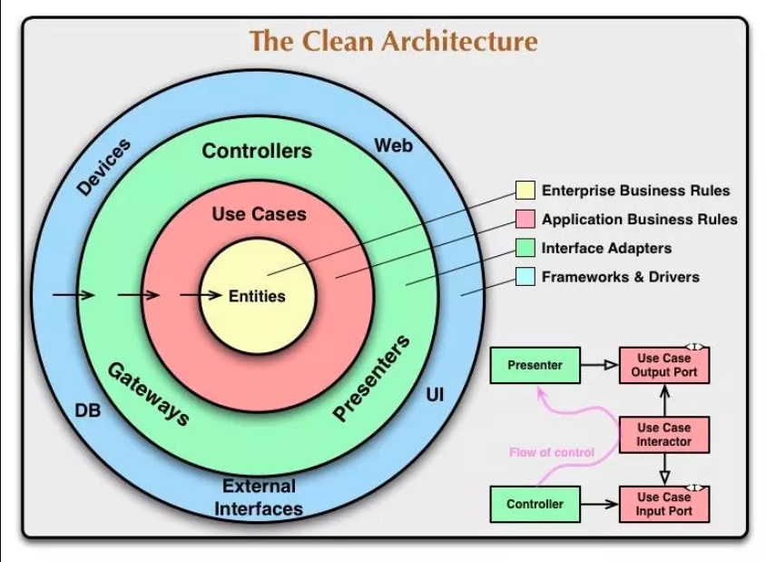

The code designed by following Clean Architecture diagram, so the color-code is matter, pay attention please.

Below are links to various code-level diagrams. Each link takes you to a dedicated page with detailed diagrams.